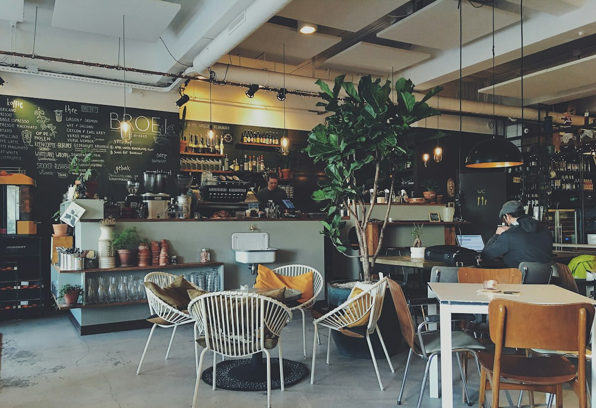
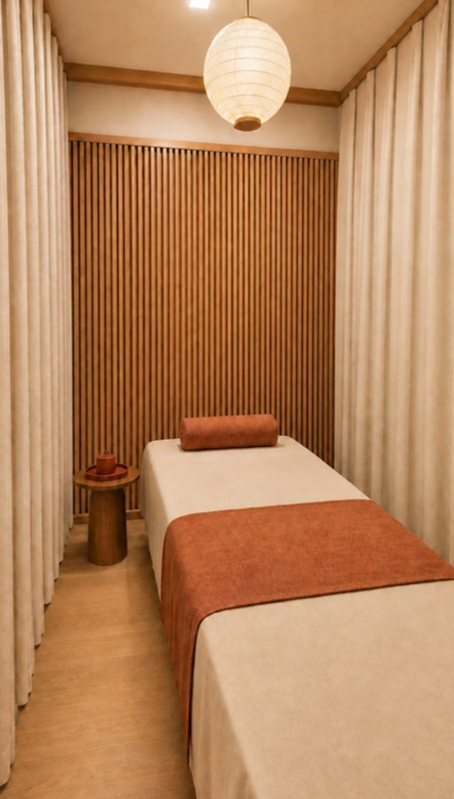
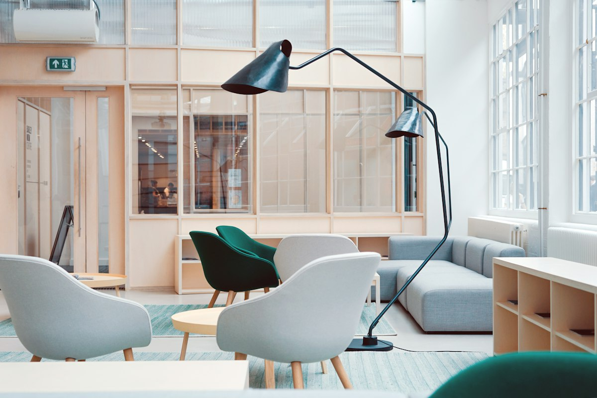
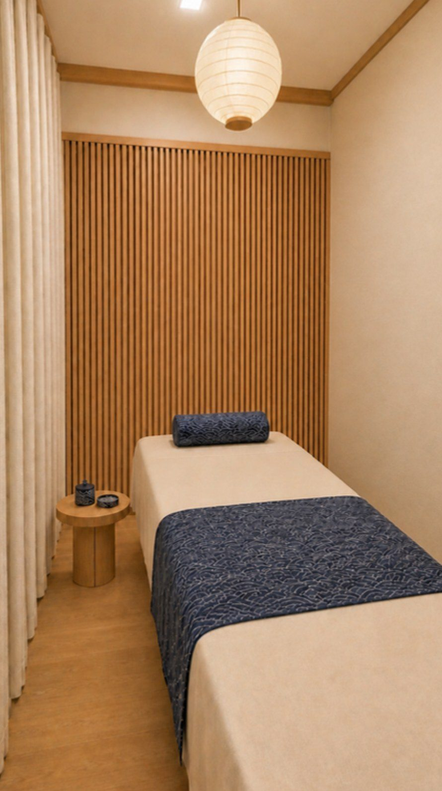
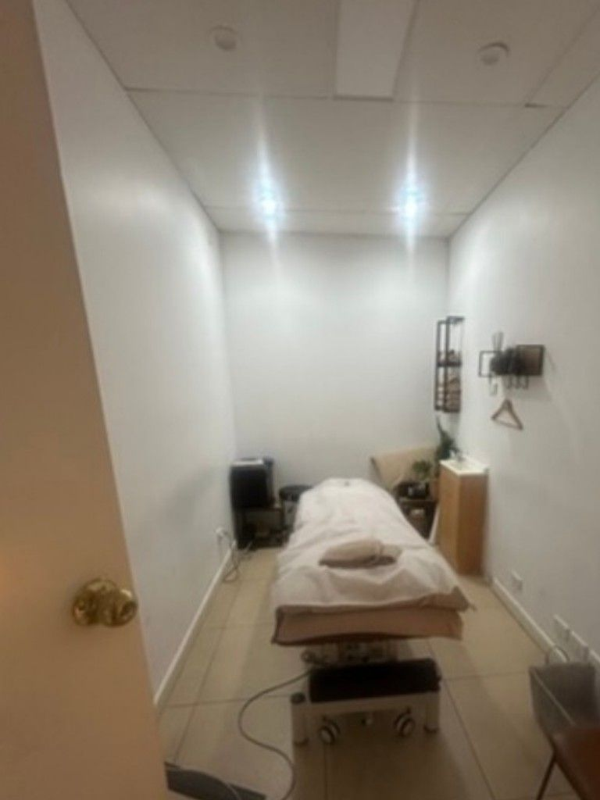
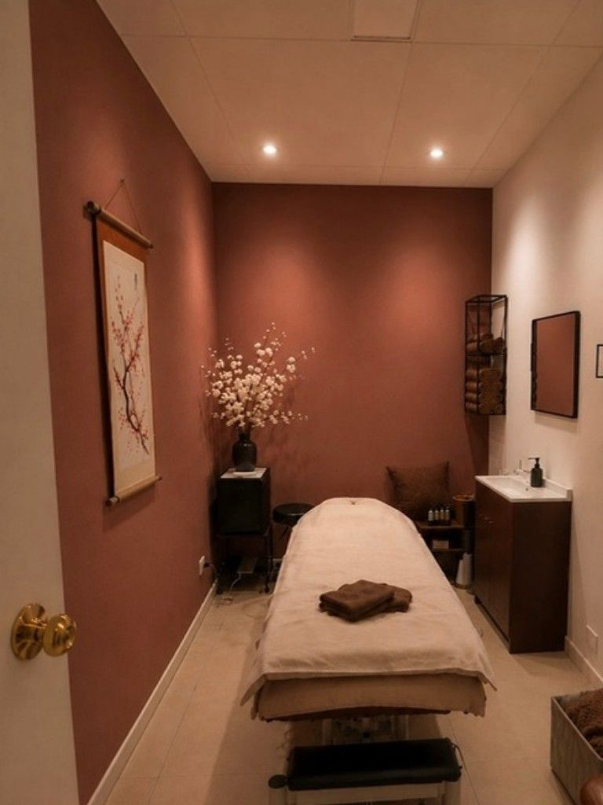
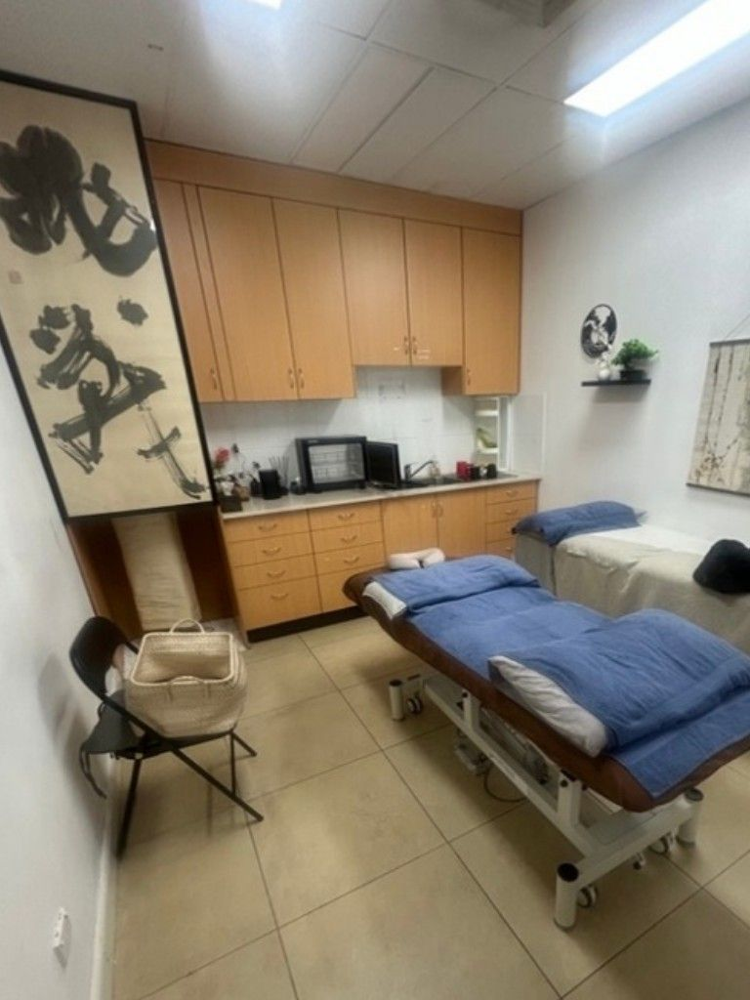
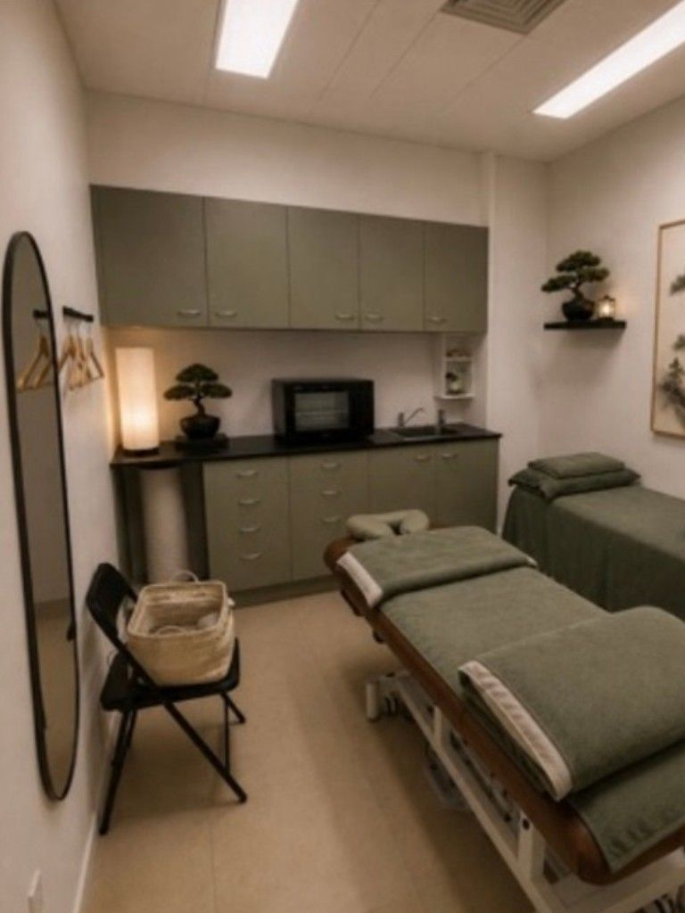

NAMI STUDIO / Shops & Offices
02 — Shops & Offices · Sydney
Japanese-inspired shop & office design.
We design cafés, salons, massage and wellness clinics, retail shops and offices in Sydney with the calm and efficiency of Japanese design — spaces where customers relax, staff work easily and your brand is remembered.
Start your enquiry
Who we design for
Small businesses with a story.

01Cafés & restaurants
Warm timber, soft light and smart seating plans that make guests want to stay — and come back.

02Salons & clinics
Massage, beauty, hair and wellness rooms that feel calm from the door to the treatment bed.

03Retail & offices
Clear layouts, honest materials and quiet focus — shops that show products well and offices people enjoy.
Why Japanese design works for business
Calm sells. Order saves time.
Customers relax
Soft light, natural texture and less clutter lower stress, so people stay longer and feel cared for.
Small spaces work harder
Japanese small-space planning fits more function into every square metre — storage, flow and seating.
A brand people remember
Hinoki, washi, shoji-style screens and noren curtains give your business a look that stands out on Instagram and Google.
Built to last
Durable materials and simple detailing keep the space looking good with less maintenance.
Case study · Design concept
Sunrise & Waves — a Japanese massage studio.
A concept for Zen Japanese Massage in Remuera, inspired by the morning sun over the bay and the gentle waves. Seigaiha wave patterns, paper lanterns, timber slats and soft curtains turn a busy street-front clinic into a calm retreat.

Before & design
Same rooms, a calmer feeling.
Two treatment rooms redesigned with Japanese colour, art and lighting — warmer and more memorable, without a full rebuild.

BEFORE
DESIGN
BEFORE
DESIGNHow it works
Designed around your business.
Talk
We visit your space and learn about your customers, staff and brand.
Concept
Design concept and mood board, with up to two rounds of changes.
Plan
Layout, materials, lighting and furniture — planned to keep downtime short.
Builder
We find licensed builders, arrange quotes and stay with you until work begins.
FAQ
Questions from business owners.
What kinds of businesses do you design for?
Cafés, restaurants, hair and beauty salons, massage and wellness clinics, retail shops and small to medium offices in Sydney and NSW.
Why choose Japanese design for a commercial space?
Japanese design is calm, uncluttered and very efficient in small footprints. Customers relax and stay longer, staff work more easily, and natural materials such as timber and washi give a business a distinctive, memorable identity.
Can you refresh my space without a full fit-out?
Yes. Many projects start with colour, lighting, furniture and decor changes that transform a room with minimal downtime. We can also plan a full fit-out and arrange licensed builders when needed.
Can you work around my opening hours?
Yes. We plan the design and the builder schedule together so work can be staged to keep downtime as short as possible.
Start a business project
Let's design your space.
Tell us about your business, your space and what you'd like customers to feel when they walk in.